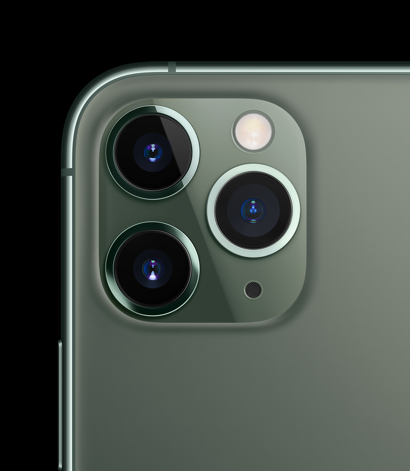

Las cosas buenas que en lo particular es que la marca de Apple siempre tiene contentos
a sus compradores, sacando mejor rendimiento mejor apartado fotografico y mejor estetica en sus
dispositivos, cabe recalcar que Apple tiene una ayuda con algunas aplicaciones como por
ejemplo puede ser la aplicacion intagram o faccebok, lo que eso quiere significar
que si tu eres un creador de contenido que sube muchas fotos o videos la calidad va ser la misma
con la que grabas, un ejemplo es que si tu grabas a 4k en un celular de la manzanita al
momento de querer subir el video no se va a notar tanto la perdida de calidad

Cosas malas del iphone
Las cosas malas que tiene son varias pero en lo particular solo se van a hablar de
algunas cosas malas, un claro ejemplo es que cuando el dispositivo es nuevo
es que no estan tan optimizados para el uso, como todo celular nuevo que sale de gama media o gama
alta, pero uno de sus problemas en la actualidad es que se calienta mucho y su sistema de refrigeracion
es muy lenta, un mito que se tiene Apple es que segun si compras un celular u otro producto
es que vas a tener que pagar por usarlo, cuando en realidad no es verdad de eso, todo eso depende
de que tanto almacenamiento lo compres el dispositivo